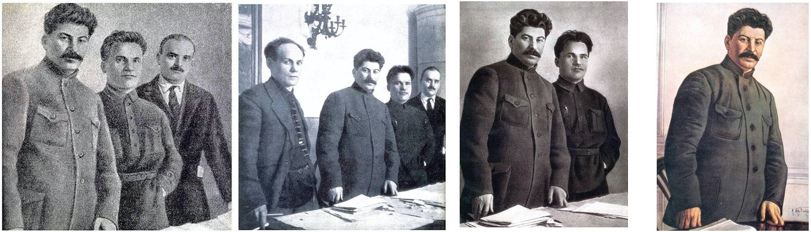
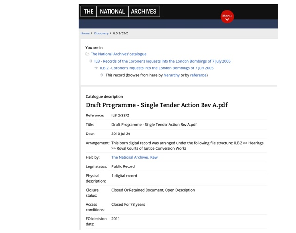
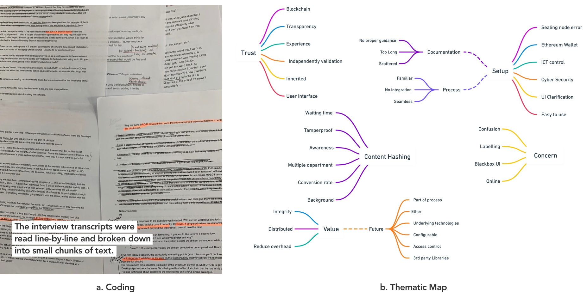

home / Securing our National Archives for Future Generations
Deep fakes. Addictive technology. Data breaches. New technology and its (mis)use in the past decade seems to have resulted in a crisis of trust in institutions, and in truth itself.

Figure 1: Nikolai Antipow, Sergej Kirow and Nikolai Schwernik edited, over time, from the record for propaganda purposes. From Wiki
National archives are not immune to a climate of distrust in institutions. The National Archives of UK alone holds over 120 miles of papers and documents, from the Domesday book to recent UK government cabinet meeting minutes.
ARCHANGEL is a project formed with members from the University of Surrey (Centre for Vision, Speech and Signal Processing), the UK’s National Archives, and the Open Data Institute (ODI).
Tasks involved:
- Led/excuted the qualitative study
- Managing various stakeholders
- Developing a research plan(including Research questions, data collection methodology and research script/guide)
- Screening/Recruiting participants
- Synthesizing the data
- Reporting and presenting findings to the stakeholders
PROBLEM
Increasing shift from physical records to the preservation of easily manipulated digital records, sometimes kept in the dark for decades before release, has put unique challenges of guaranteeing the integrity of the digital records.
Further, these Digital records – that are transient, easy to copy and modify, and prone to corruption in copy and storage – often need to be ported from one format to another, as technology evolves and software used to read certain formats stops being available.

Figure 2: Example of a closed record description in the catalogue of The National Archives
AIM
ARCHANGEL explores a solution to address challenges around trust, integrity and authenticity in archives through the possibilities offered by technology.
Over 2 years, the team worked on the creation of a prototype that uses distributed ledger technology (commonly known as Blockchain) to guarantee that document fingerprints cannot be altered, and machine learning to create fingerprints that can withstand format shifts.
However, there was a need to gather deeper insights on whether external digital preservation practitioners would: understand what the prototype (technology) did and its need; see value in the methodology; and have an interest beyond a simple prototype etc.
UNDERSTANDING THE PROJECT
Tight deadlines // Technical project
I joined the project at its last phase when the team have created the prototype system. As a technical project and members of all the national archives being highly technical, it was important for me to get a deep understanding of the concept, prototype, archival jargons (Open Archival Information System/OAIS language), and about blockchain and specific machine learning theories/temporal hashing etc.
My academic background in technology helped me quickly pick up the concepts and metaphors that later helped me in engaging with the participants in an organic way, frame contextual questions and provide a much more detailed result/findings.
DEVELOPING A RESEARCH PLAN<
Multiple stakeholder // Managing expectations
At the outset of the project, we didn’t have a clear idea on the research questions/hypothesis as various stakeholders involved had different suggestions on what they wanted to know from the study.
As the concept was still in an exploratory/discovery phase some suggested to gather more insights on the concept and if it is a viable idea; some wanted to focus on getting critique on the prototype/setup & usability, and some wanted to understand the users and their habits to get new ideas.
Therefore, to demonstrate the potential for innovation, I decided to do a comprehensive study that covered viability, desirability, feasibility and usability aspects of the prototype, inspired by Ideo's design thinking concept "The Sweet Spot for Innovation".
Some of the research questions that have driven the investigations are addressed below:
| Business proposition/Address user pain points: | Does the prototype tackles the key pain-points/needs of the archivist and provides value to the customers (National Archives)? |
|---|---|
| User engagement: | How does the user engage with the prototype, whether the prototype appeals to the users? And does it support or conflicts with their usual mental model? |
| Knowhow of Underlying technologies (distributed ledger technologies - Blockchain, hashing and computer vision) | Did the archivists understand the underlying technology of ARCHANGEL ? Would that understanding matter in order for them to have trust in the system and, importantly, to see it as an improvement on existing processes and structures? |
| Deployment: | How feasible is the system's set-up Experience? Is the prototype easy to deploy with limited resources? |
PARTICIPANTS RECRUITMENT
Organisational hierarchy // Sensitive Communication
Once we decided the research questions, it was challenging to recruit the right users as the participants are government organisations with hierarchical roles. Besides, we were dealing with sensitive data and involvement of senior management and head of departments.
For instance the prototype will be implemented by the IT department while needing to send technical audits to the management & regulatory team, used by archivist in their routine archival work, while its viability would be accessed by the management/heads who are also responsible to access its viability and intergrity, the regulatory team would check on compliance etc.
With the help of our partners, I decided to understand the management of each organisation and their motivations. The participants were not inclined to monetary incentives and their motivations were to contribute to the success of the study. This insights later helped in shaping the data collection methodology.
Due to small sample size, I chose Maximum phenomena variation sampling (3-8 participants) for recruiting participants, it ensures that the full range and extent of the phenomena are represented in a sample while keeping a focus on the detailed richness of participants' experience. Five(5) participants were involved in this study (see figure below).

Figure 3: Five National Archives {participants}: The National Archives (UK), National Archives of Australia, The National Archives of Norway, The National Archives and Records Administration, The National Archives of Estonia
DATA COLLECTION METHODOLOGIES
Multiple aspects to the study
As there were four aspects to this study namely viability, desirability, feasibility and usability, there were specific data collection techniques for each one of them.
Thorough review of various research work was done as well as specific cases were considered to come to the following methodologies outlined below:
| Aspect | Data Collection |
|---|---|
| Viability measures if the prototype aligns to user needs/values with the potential payoff in terms of desired outcomes—whether they were monetary or some other quantifiable measure. | Semi-structured interview |
| Desirability captures aspects of,‘Worth having or seeking, as by being useful, advantageous, or pleasing’ | The Desirability Toolkit method, developed by Joey Benedek and Trish Miner of Microsoft, was used. It asks research participants to describe their reactions based on a selected set of adjectives. |
| Feasibility measures the effectiveness/confidence of setting-up and running the prototype. | A survey that would include a confidence test through Likert-scale questions |
| Usability measures how easy the prototype is to be used by the users. | Think-aloud method followed by post-observation semi-structured questions. |
DATA COLLECTION APPROACH
Remote distributed teams // Multiple time zones // Firewalls
The data collection approach should be well suited to the participants who were time-constrained, spread across the country with multiple time zones and compliance & data sensitive.
Therefore the data collection methodologies were combined into two phases:
- Remote video/audio (40-45 minutes) session comprising of:
- Think Aloud testing: Participants were asked to go through the prototype with a use-case while encouraging to think out loud (whatever they are looking at, thinking, doing, and feeling at each moment) as they are performing a task.
This method is especially helpful for determining users' expectations and identifying what aspects of a system are confusing. Hence used to focus on the Usability aspect of the study. Although the study was mainly concerned with understanding deeper aspects such as viability, feasibility and desirability of ARCHANGEL, usability data collection techniques were first introduced to the participants, as it was an accessible way to make the participants feel comfortable with the system and the settings. - Semi-structured interview: A list of follow-up open-ended questions was asked to elaborate the Usability issues that were identified in the think-aloud testing while slowly transitioning into the deeper aspects of the study i.e. viability and feasibility of ARCHANGEL.
- Follow-up survey to address the desirability aspect of the study. Due to the remote nature of the study, we modified The Desirability Toolkit method by using a survey while probing participants’ rationales for why they chose certain adjectives to uncover additional insights.
Also, improvisations were made where necessary such as due to firewall it was impossible to use third-party apps such as User Zoom therefore, Zoom + Quicktime + Notes.
DATA ANALYSIS
All the interviews were transcribed verbatim. During the setup process, there was also a lot of email communication that was recorded as well for analysis. Thematic analysis (an exploratory data analysis process) was used to induce emerging themes from the data and get insights into the research question.
Figure 4: Thematic analysis process
RESULTS AND FINDINGS
The key thing for us is the blockchain environment. [...] Where I work there's a 20-year closed period. That's a long time for files and metadata to be sitting around. If we can prove authenticity and integrity through a tried and tested technology, [...] then that's going to help us a lot just through multiple generations of technology.
The technology developed through the ARCHANGEL project, and the results of the study, were incredibly promising. The results from the data analysis presented seven themes.
The themes generated insights and gave us access to a wide range of ideas, and a broad perspective on the experiences of various kinds of archivists. Usability themes were cross-analysed with heuristics evaluation technique to provide with severity ratings and design suggestions.
The main differentiator was whether the participants had prior understanding and knowledge of blockchain technology.
- Those who did, understood the underlying value of mutually underwriting the integrity of other archives and trusted the system.
- Those who did not, while appreciating the value of software that creates fingerprints for digital records, understood ARCHANGEL’s trust framework as inherently residing with the participating organisations.